A Site Recommendation for New Korean Grocery Store
Spatial Analysis
U.S. Census
Spatial Database
Foothill College
Namjun Kim
Purpose of the Project
Specific aim
- To recommend the site for a new Korean grocery store
Broad aims
- To learn about Census data for GIS analysis
- To learn about a spatial database
Find the census tracts in Santa Clara County
1. that have high Asian and Korean populations
- data from U.S. Census (B02001, B02006)
2. that intersect with major highways
- data from California Department of Transportation
3. that does not have existing Asian grocery stores
- geocoding the addresses from store websites
Spatial Database
- Including Korean populations of neighboring tracts sounds like a good idea
- But, 372 tracts in ArcGIS? Really?
- Spatial Database!
- PostGIS is a spatial database extender for open source database PostgreSQL (also open source)
Spatial Analysis
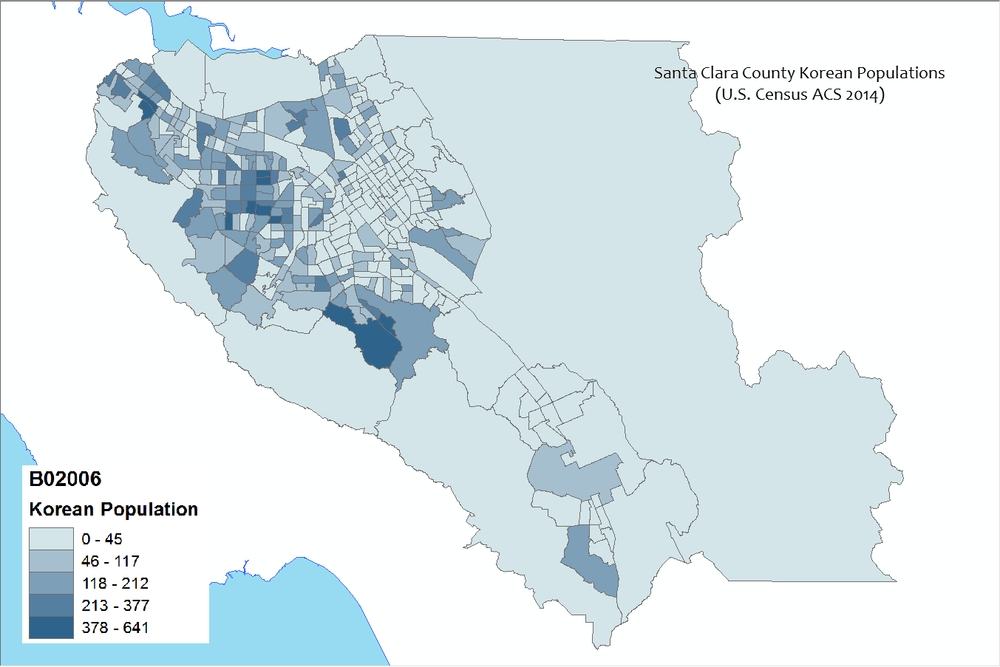Spatial Analysis

Spatial Analysis
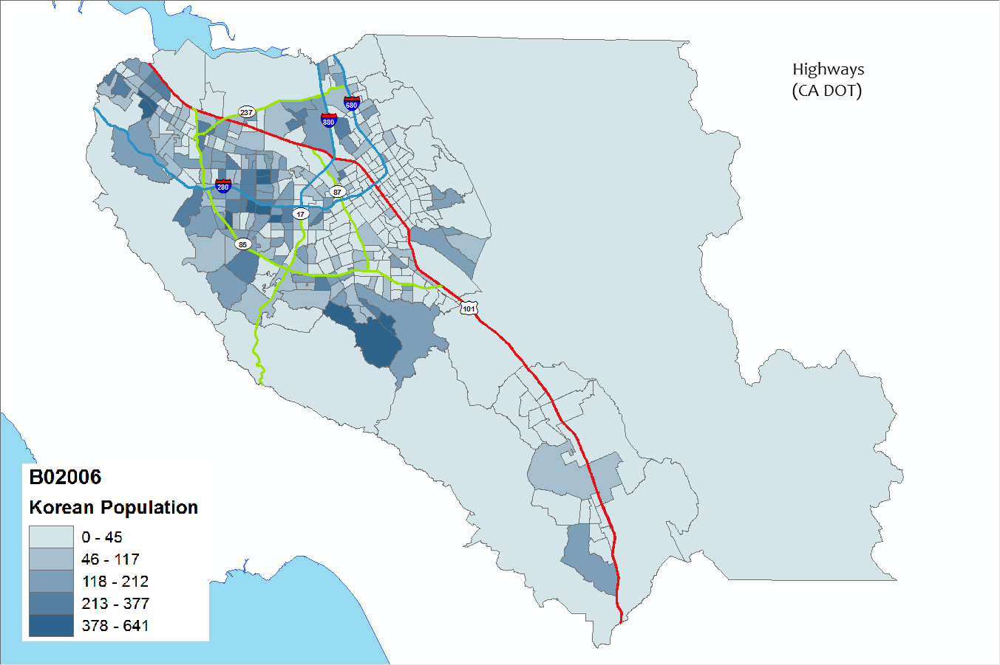Spatial Analysis
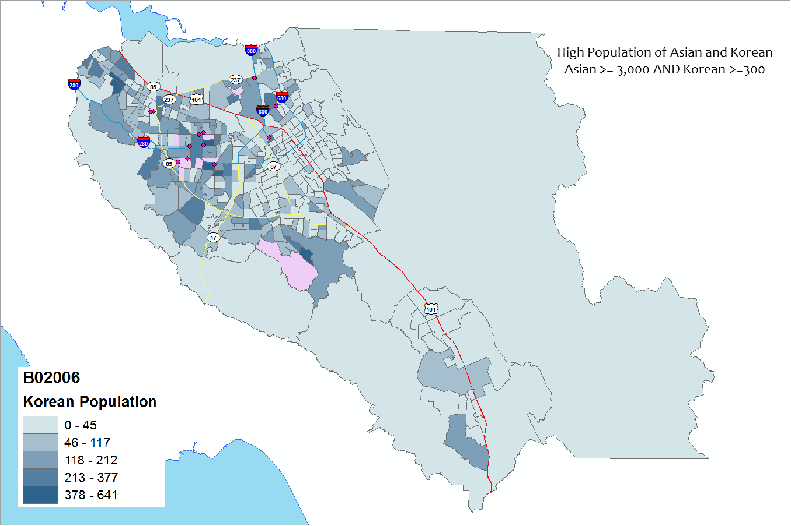Spatial Analysis
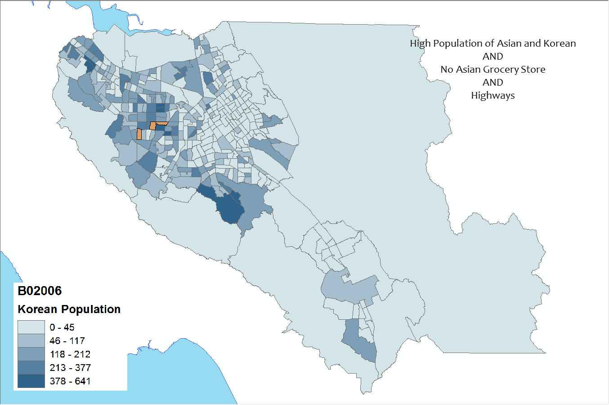Webmap with leaflet.js
Result of Spatial Analysis
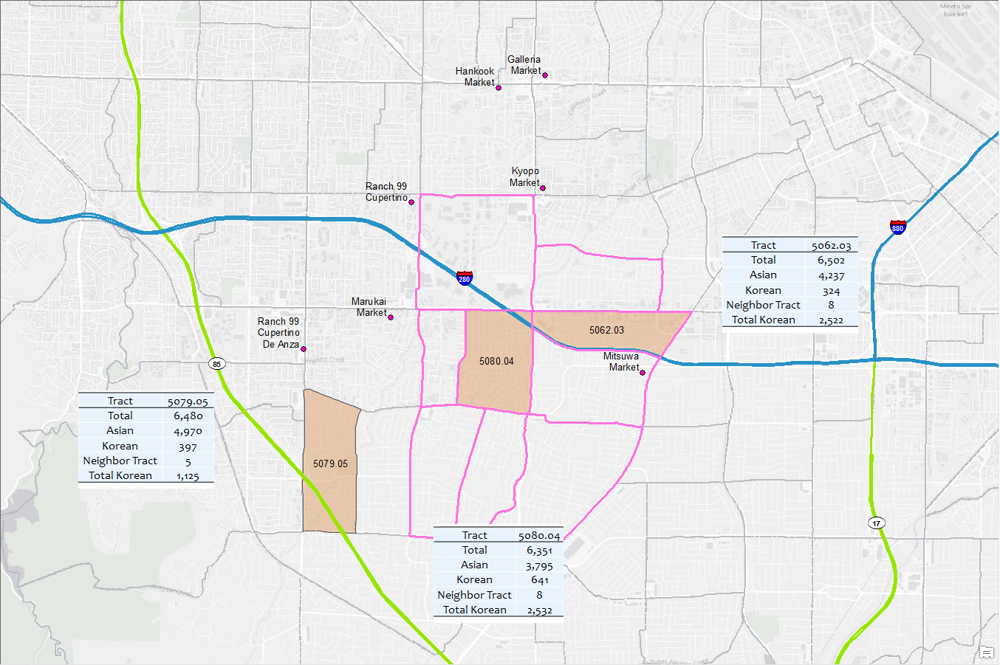PostgreSQL/PostGIS
Census tables and shapefiles are imported
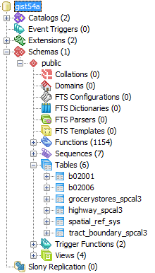PostgreSQL/PostGIS
Query to create a table
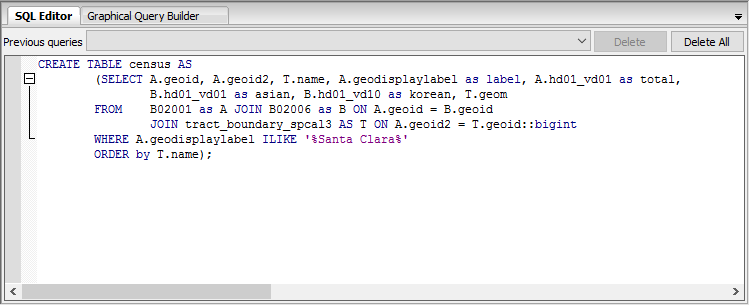PostgreSQL/PostGIS
The table with necessary info
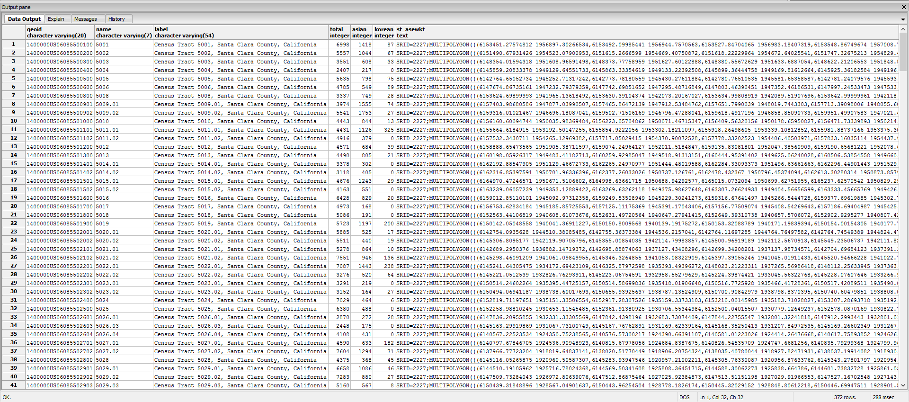PostgreSQL/PostGIS
geometry column (geom)
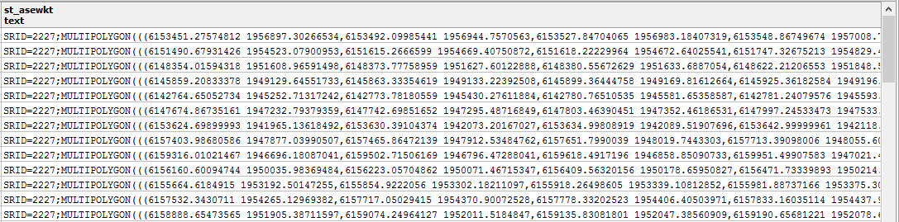PostgreSQL/PostGIS
The same analysis as the previous ArcGIS

PostgreSQL/PostGIS
Considering neighboring tracts
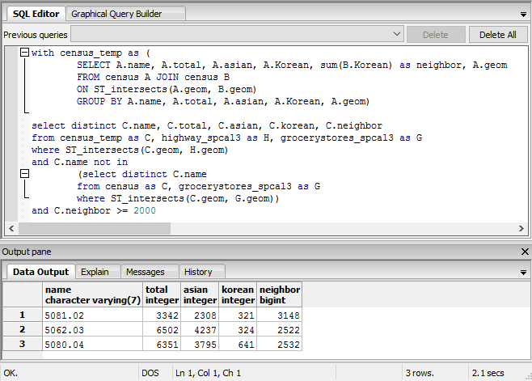The Fianl Result
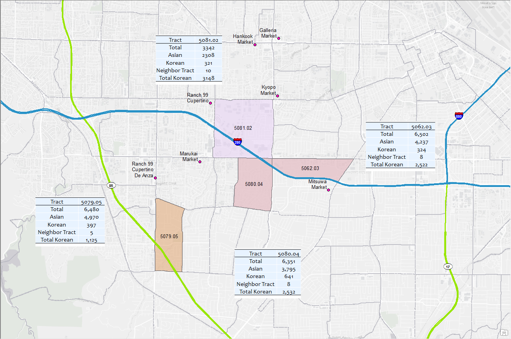Grocery Stores
- Provide fresh food
- Employment opportunity
- Center for community and neighborhood
Grocery Stores
“We are what we eat”
- Grocery Gap & Underserved community
- Many groups of researchers try to make connections between underserved area and socioeconomic status
- Census data are critical to the research
U.S. Census
“The U.S. Census counts every resident in the United States and takes place every 10 years.”
- The number of seats in the house of representatives
- Distribution of federal funding
U.S. Census form 2010
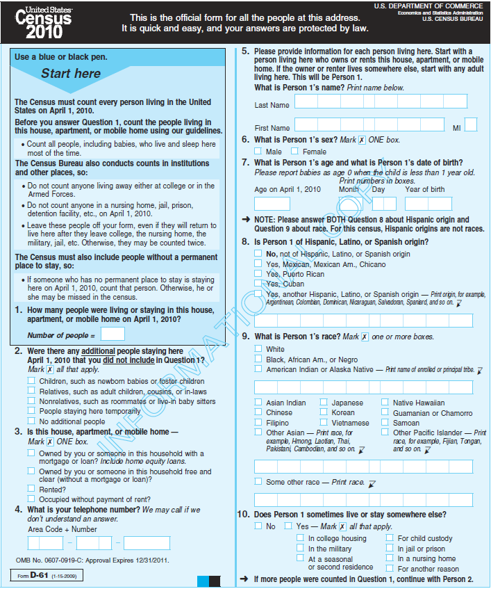American Community Survey (ACS)
- Replaced the long form
- 3.5 million addresses each year
- 1 year estimates: 65,000+
- 3 year estimates: 20,000+
- 5 year estimates: all
U.S. Census Geographical Units
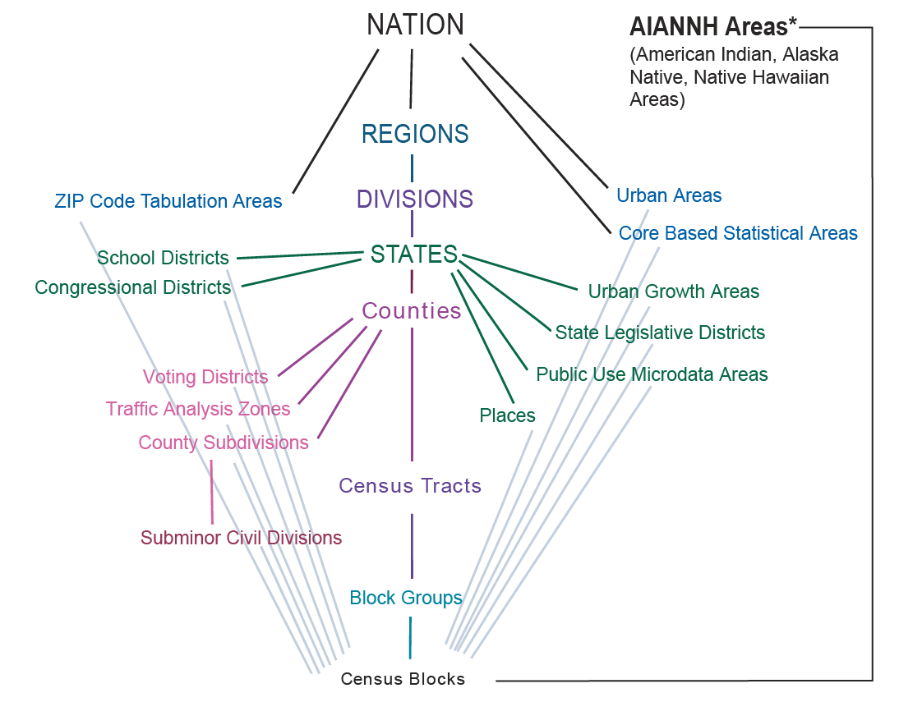Conclusions
- Spatial Analysis on recommendation of the census tracts for a new Korean grocery store
- A spatial database system PostgreSQL/PostGIS was introduced
- U.S. Census – must know